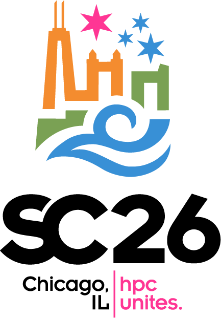
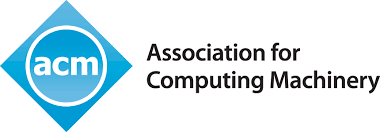

Workshop held in conjunction with SC26 - November 15 - 20, 2026 - Chicago, Illinois, USA

Held in conjunction with SC26: The International Conference for High
Will be posted after final papers have been accepted.
LLVM has become an integral part of the software-development ecosystem for optimizing compilers, dynamic-language execution engines, source-code analysis and transformation tools, debuggers and linkers, and a whole host of programming-language and toolchain-related components.The recent surge in AI development has further proven the efficacy of the LLVM infrastructure as many predominant AI/ML compilation systems deployed in practice leverage the MLIR framework to exploit high level semantics provided by their frontends, while maintaining a production grade and high performance software stack. Research in, and implementation of, program analysis, compilation, execution, and profiling has clearly benefited from the availability of a high-quality, freely-available infrastructure on which to build. This workshop will focus on recent developments, from both academia and industry, that build on LLVM to advance the state of the art in high-performance computing.
This workshop will feature contributed papers and an invited talk focusing on recent developments that build on LLVM to advance the state of the art in high-performance computing.
Topics of interest include, but are not limited to:
Please note: All participants (authors, presenters, committee members, and attendees alike) are expected to follow both the LLVM Code of Conduct as well as the relevant SC26 conduct policies.
Please see the SC26 home page for registration deadlines and other information associated with the parent event. Pending the acceptance of the final workshop proceedings, the selected papers will be published by IEEE Xplore.
Please submit papers using the SC26 Submissions system by selecting the "SC26 Workshop: LLVM-HPC2026 Full Papers" form. Papers must use the new proceedings templates and the CCS2012 guide (available here), should be no more than 12 pages (including references and figures), and must be at least 6 pages long.
Alexis Perry-Holby (aperry@lanl.gov)
James Brodman (james.brodman@amd.com)
Ryan Kabrick (rkabrick@tactcomplabs.com)
Johannes de Fine Licht (definelicht@inf.ethz.ch)